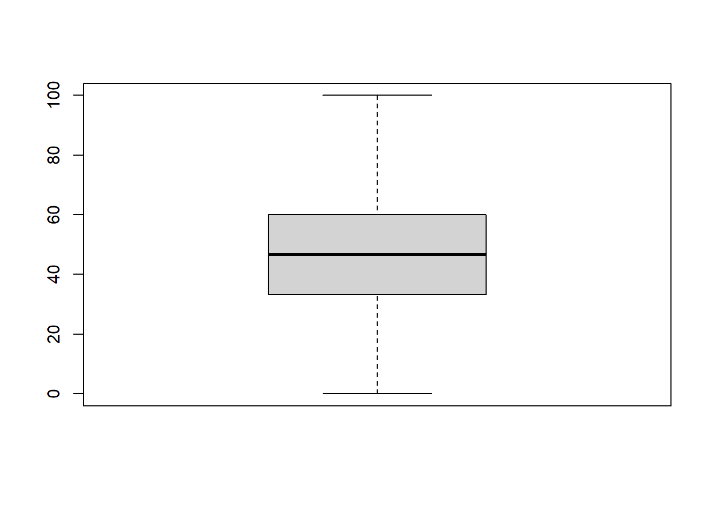
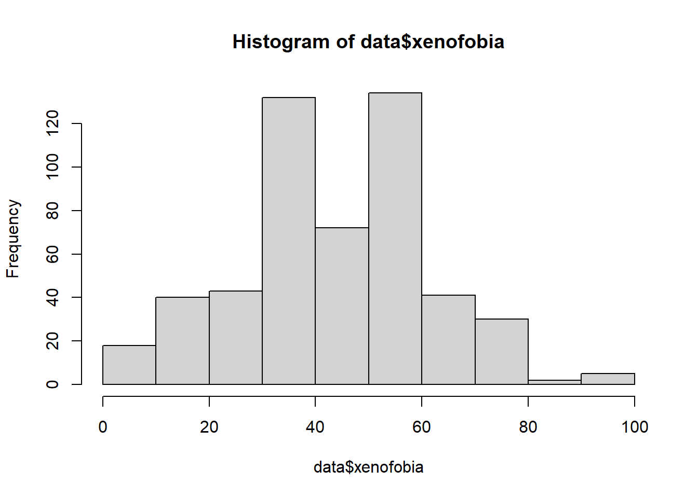
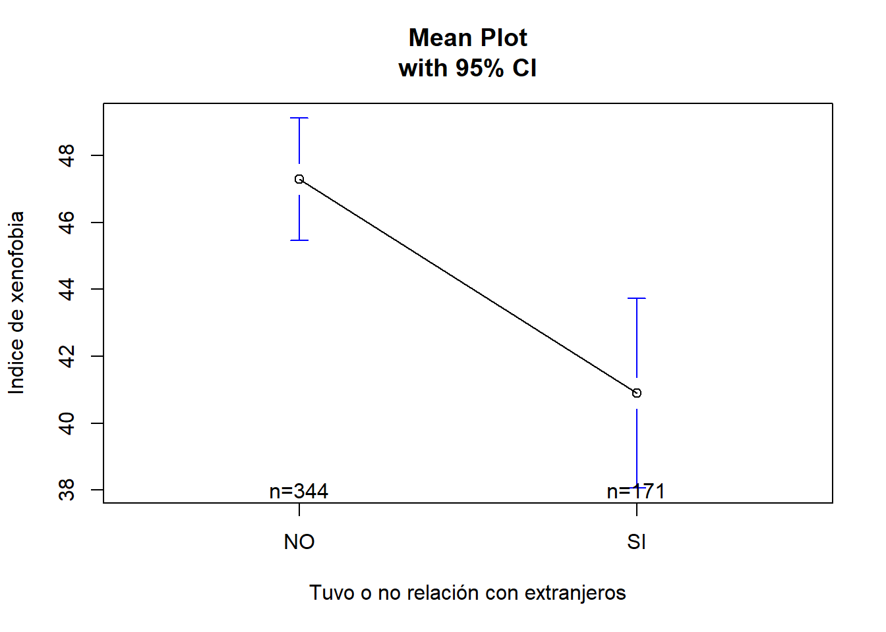
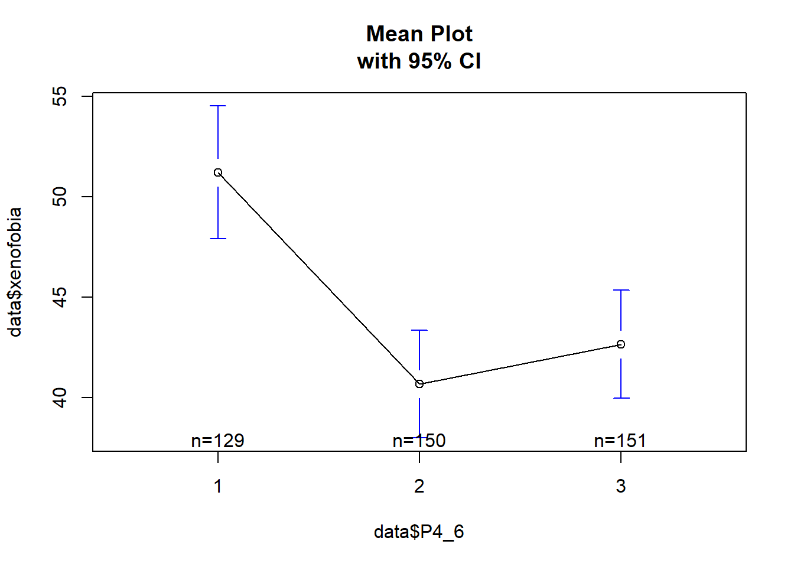
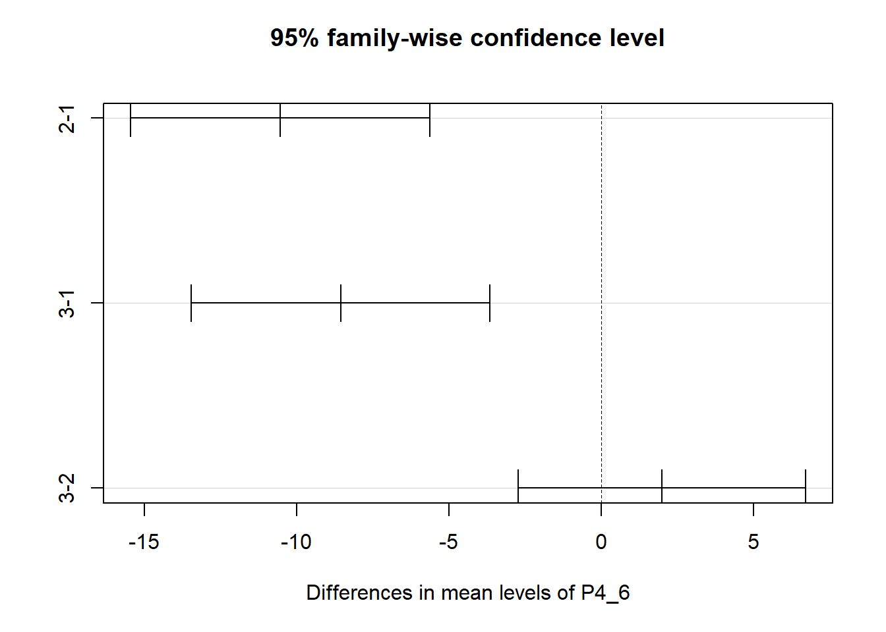

library(rio)
data = import("./data/s8/b-peru_2014_base.dta")9 FACULTAD DE CIENCIAS SOCIALES - PUCP
Co-author: Luis Valverde
9.0.1 Curso: POL 278 - Estadística para el análisis político 1
9.0.2 Semestre 2021-2
9.0.3 Docente: Marylia Cruz
9.0.4 Sesión de Repaso
============================================================
El objetivo de esta sesión es realizar un repaso de regresiones.
La base de datos es del proyecto LAS AMERICAS Y EL MUNDO :
https://www.lasamericasyelmundo.cide.edu
10 Abrir la base de datos
10.1 PREGUNTA 1
- Calcule el intervalo de confianza para la proporción de peruanos que consideran estar muy de acuerdo con que los extranjeros que viven en el Perú contribuyen a la economía en el Perú P4_9_1_A_A
table(data$P4_9_1_A_A)
1 2 3 4 8 9
209 266 57 28 38 2 10.2 INTERVALO DE PROPORCIONES
#Intervalo de proporciones
n=209+266+57+28
x=209
prop.test(x, n, p=NULL,
alternative=c("two.sided", "less", "greater"),
conf.level=0.95, correct=TRUE)
1-sample proportions test with continuity correction
data: x out of n, null probability 0.5
X-squared = 35.502, df = 1, p-value = 2.548e-09
alternative hypothesis: true p is not equal to 0.5
95 percent confidence interval:
0.3332796 0.4149149
sample estimates:
p
0.3732143 library(car)
data$P4_9_1_A_A<- recode(data$P4_9_1_A_A, "8=NA;9=NA")
data$P4_9_1_A_D<- recode(data$P4_9_1_A_D, "8=NA;9=NA")table(data$P4_9_1_A_A,data$P4_9_1_A_D)
1 2 3 4
1 141 48 14 1
2 99 123 29 5
3 8 15 23 7
4 8 8 5 610.3 PREGUNTA 2
- Describa la relación entre considerar que los extranjeros en el Perú contribuyen a la economía peruana y traen ideas innovadoras (P4_9_1_A_A, P4_9_1_A_B)
10.4 CHI CUADRADO
chisq.test(table(data$P4_9_1_A_A,data$P4_9_1_A_D))
Pearson's Chi-squared test
data: table(data$P4_9_1_A_A, data$P4_9_1_A_D)
X-squared = 150.56, df = 9, p-value < 2.2e-1610.5 Medidas de asociación
# Medidas de asociación para variables ordinales
library(DescTools)
tabla=table(data$P4_9_1_A_A,data$P4_9_1_A_D)
GoodmanKruskalGamma(tabla, conf.level=0.95) gamma lwr.ci upr.ci
0.5538044 0.4575563 0.6500525 KendallTauB(tabla, conf.level=0.95) tau_b lwr.ci upr.ci
0.3699944 0.2973917 0.4425971 StuartTauC(tabla, conf.level=0.95) tauc lwr.ci upr.ci
0.3078464 0.2454455 0.3702472 10.6 PREGUNTA 3
- Realice un índice aditivo de xenofobia a partir de las siguientes preguntas: P4_9_1_A_A, P4_9_1_A_B, P4_9_1_A_C, P4_9_1_A_D, P4_9_1_A_E) (Agregue gráficos para ampliar su interpretación)
10.7 CREACIÓN DE INDICADORES
library(car)
data$P4_9_1_A_B<- recode(data$P4_9_1_A_B, "1=4;2=3;3=2;4=1;8=NA;9=NA")
data$P4_9_1_A_C<- recode(data$P4_9_1_A_C, "1=4;2=3;3=2;4=1;8=NA;9=NA")
data$P4_9_1_A_E<- recode(data$P4_9_1_A_E, "1=4;2=3;3=2;4=1;8=NA;9=NA")data$sum_xenofobia=(data$P4_9_1_A_A+data$P4_9_1_A_B+data$P4_9_1_A_C+data$P4_9_1_A_D+data$P4_9_1_A_E)
summary(data$sum_xenofobia) Min. 1st Qu. Median Mean 3rd Qu. Max. NA's
5.00 10.00 12.00 11.78 14.00 20.00 683 data$xenofobia=((data$sum_xenofobia-5)/15)*100
summary(data$xenofobia) Min. 1st Qu. Median Mean 3rd Qu. Max. NA's
0.00 33.33 46.67 45.18 60.00 100.00 683 boxplot(data$xenofobia)
hist(data$xenofobia)
table(data$P2_7)
1 2 8 9
185 1002 10 2 10.8 PREGUNTA 4
- Describa la relación entre el índice de xenofobia y si las personas tienen una relación con extranjeros que viven en el Perú (P4_5)
10.9 PRUEBA T
data$P4_5<- recode(data$P4_5, "1='SI';2='NO';8=NA;9=NA")t.test(xenofobia ~ P4_5, data = data,conf.level = 0.95)
Welch Two Sample t-test
data: xenofobia by P4_5
t = 3.7386, df = 314.47, p-value = 0.0002198
alternative hypothesis: true difference in means between group NO and group SI is not equal to 0
95 percent confidence interval:
3.027150 9.753121
sample estimates:
mean in group NO mean in group SI
47.28682 40.89669 library(gplots) # para solicitar las graficas de error
plotmeans(xenofobia~P4_5,data=data, p=0.95,
xlab="Tuvo o no relación con extranjeros", ylab="Indice de xenofobia",
main="Mean Plot\nwith 95% CI")
10.10 PREGUNTA 5
- Describa la relación entre el índice de xenofobia y si la percepción sobre el número de extranjeros en el Perú (P4_6)
10.11 ANOVA
table(data$P4_6)
1 2 3 8 9
307 287 336 255 15 data$P4_6<- recode(data$P4_6, "8=NA;9=NA")data$P4_6=as.factor(data$P4_6)anova=aov(xenofobia ~ P4_6, data = data)
summary(anova) Df Sum Sq Mean Sq F value Pr(>F)
P4_6 2 8537 4269 14.11 1.16e-06 ***
Residuals 427 129139 302
---
Signif. codes: 0 '***' 0.001 '**' 0.01 '*' 0.05 '.' 0.1 ' ' 1
770 observations deleted due to missingnessanovaCall:
aov(formula = xenofobia ~ P4_6, data = data)
Terms:
P4_6 Residuals
Sum of Squares 8537.05 129139.02
Deg. of Freedom 2 427
Residual standard error: 17.39061
Estimated effects may be unbalanced
770 observations deleted due to missingnessTukeyHSD(anova) Tukey multiple comparisons of means
95% family-wise confidence level
Fit: aov(formula = xenofobia ~ P4_6, data = data)
$P4_6
diff lwr upr p adj
2-1 -10.547804 -15.459120 -5.636487 0.0000019
3-1 -8.565464 -13.469255 -3.661672 0.0001413
3-2 1.982340 -2.732701 6.697381 0.5843335¿Qué concluimos?
plotmeans(data$xenofobia~data$P4_6, p=0.95,
main="Mean Plot\nwith 95% CI")
plot(TukeyHSD(anova))
11 SESIÓN DE REPASO
Descargue la base de datos del perú_2014_base.dta que corresponde al estudio del Perú y Las Américas del 2014. Descargue el cuestionario.
Calcule el intervalo de confianza para la proporción de peruanos que consideran estar muy de acuerdo con que los extranjeros que viven en el Perú contribuyen a la economía en el Perú P4_9_1_A_A
Describa la relación entre considerar que los extranjeros en el Perú contribuyen a la economía peruana y traen ideas innovadoras (P4_9_1_A_A, P4_9_1_A_B)
Realice un índice aditivo de xenofobia a partir de las siguientes preguntas: P4_9_1_A_A, P4_9_1_A_B, P4_9_1_A_C, P4_9_1_A_D, P4_9_1_A_E) (Agregue gráficos para ampliar su interpretación)
Describa la relación entre el índice de xenofobia y si las personas tienen una relación con extranjeros que viven en el Perú (P4_5)
Describa la relación entre el índice de xenofobia y si la percepción sobre el número de extranjeros en el Perú (P4_6)